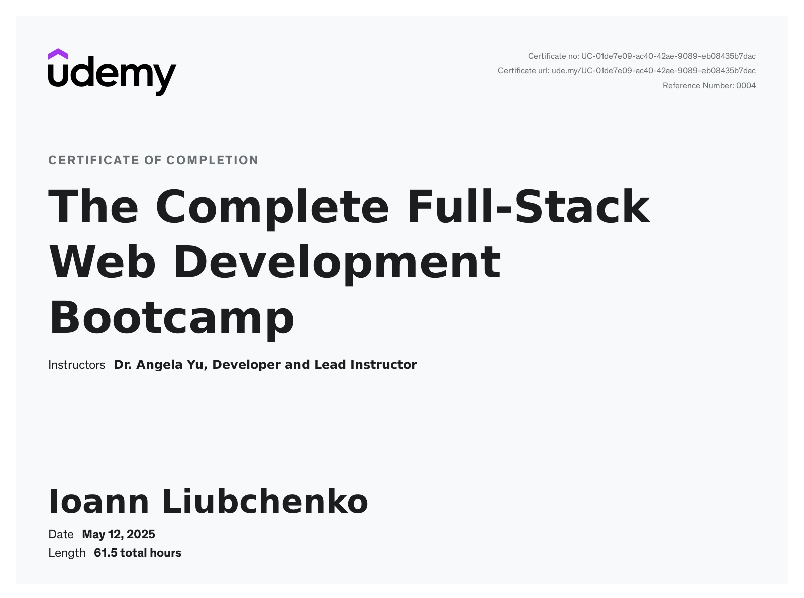

Вступ
Під час проходження курсу "The Complete Full-Stack Web Development Bootcamp" на платформі Udemy я мав змогу зануритися в основи JavaScript, попрактикуватися в написанні простих алгоритмів та закріпити базові навички програмування. У цьому звіті представлено результати семи практичних завдань, що охоплюють ключові теми мови.
01 - Variables
function test() {
var a = "3";
var b = "8";
var temp = a;
a = b;
b = temp;
console.log("a is " + a);
console.log("b is " + b);
}02 - Life in Weeks
function lifeInWeeks(age) {
var yearsLeft = 90 - age;
var daysLeft = yearsLeft * 365;
var weeksLeft = yearsLeft * 52;
var monthsLeft = yearsLeft * 12;
console.log("You have " + daysLeft + " days, " + weeksLeft + " weeks, and " + monthsLeft + " months left.");
}03 - BMI Basic
function bmiCalculator(weight, height) {
var bmi = weight / (height * height);
return Math.round(bmi);
}04 - BMI Advanced
function bmiCalculator(weight, height) {
var bmi = weight / (height * height);
if (bmi < 18.5) {
return "Your BMI is " + bmi + ", so you are underweight.";
} else if (bmi >= 18.5 && bmi <= 24.9) {
return "Your BMI is " + bmi + ", so you have a normal weight.";
} else {
return "Your BMI is " + bmi + ", so you are overweight.";
}
}05 - Leap Year
function isLeap(year) {
if (year % 4 === 0) {
if (year % 100 === 0) {
if (year % 400 === 0) {
console.log("Leap year.");
} else {
console.log("Not leap year.");
}
} else {
console.log("Leap year.");
}
} else {
console.log("Not leap year.");
}
}06 - Who's Paying
function whosPaying(names) {
var randomIndex = Math.floor(Math.random() * names.length);
var selectedPerson = names[randomIndex];
return selectedPerson + " is going to buy lunch today!";
}07 - Fibonacci
function fibonacciGenerator(n) {
var output = [];
if (n === 1) {
output = [0];
} else if (n === 2) {
output = [0, 1];
} else {
output = [0, 1];
for (var i = 2; i < n; i++) {
output.push(output[i - 1] + output[i - 2]);
}
}
return output;
}Сертифікат
Корисні посилання
Репозиторій на GitHub Жива сторінка головної сторінки Жива сторінка звітного документуВисновок
Курс виявився дуже корисним та практично орієнтованим. Я навчився працювати з базовими елементами JavaScript, створювати прості функції, обробляти умови та масиви. Завдяки практичним задачам я зрозумів, як будуються логіка та алгоритми в реальних проектах. Це дало мені впевненість у подальшому вивченні Frontend і Backend технологій. Отриманий сертифікат став гарним підсумком моїх зусиль та ще одним кроком у розвитку як веб-розробника.